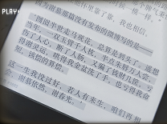
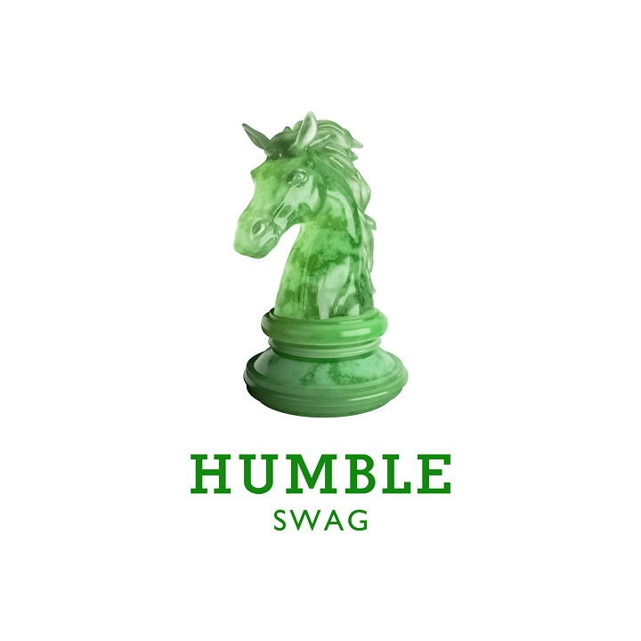

Humble Swag
这是马思唯个人第三张录音室专辑。
回归 Hip hop 音乐的律动和 Rap 的 Flow,
记录他说唱生涯近十年所打磨出来的音乐理念。
什么是“ Humble Swag ”?Humble——谦逊的, Swag一有范的。
作为一名90后的年轻人, 马思唯身上带着中国传绕的谦虚品质;
作为一个从小被 Hip hop 音乐浸泡的职业 Rapper, 他又是张扬的、狂放的。
这张专辑就是马思唯对当代年轻人「谦虚有样」的诠释和理解。
兴趣爱好
|My Interest
- 


阅 读
街 舞
钢 琴
游 泳
Best · Album
